Balgat'ta bir şantiyeden klinik çıkıyor
Boş bir ticari kat; çelik merdiven, gazbeton bölmeler ve şimdi asma tavan. Çizgiyi kaydırarak bugünü ve hedeflenen sonucu karşılaştırın.
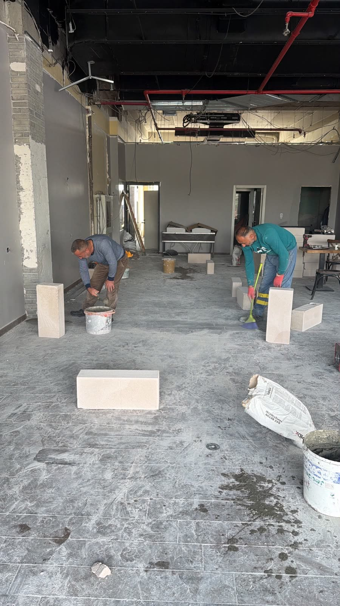
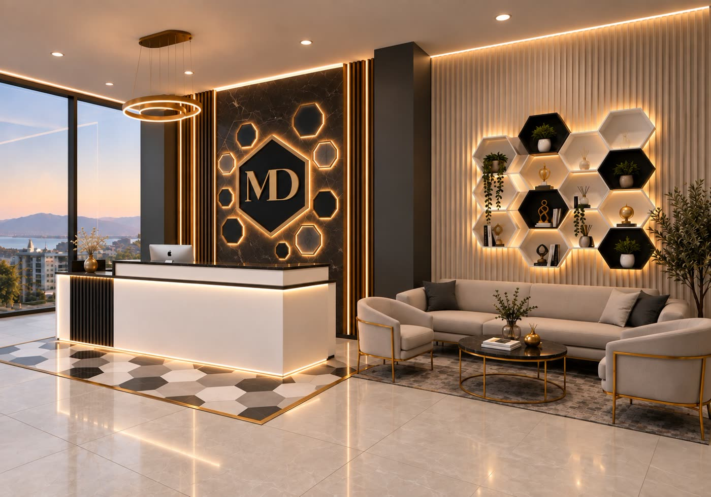
ŞANTİYETASARIM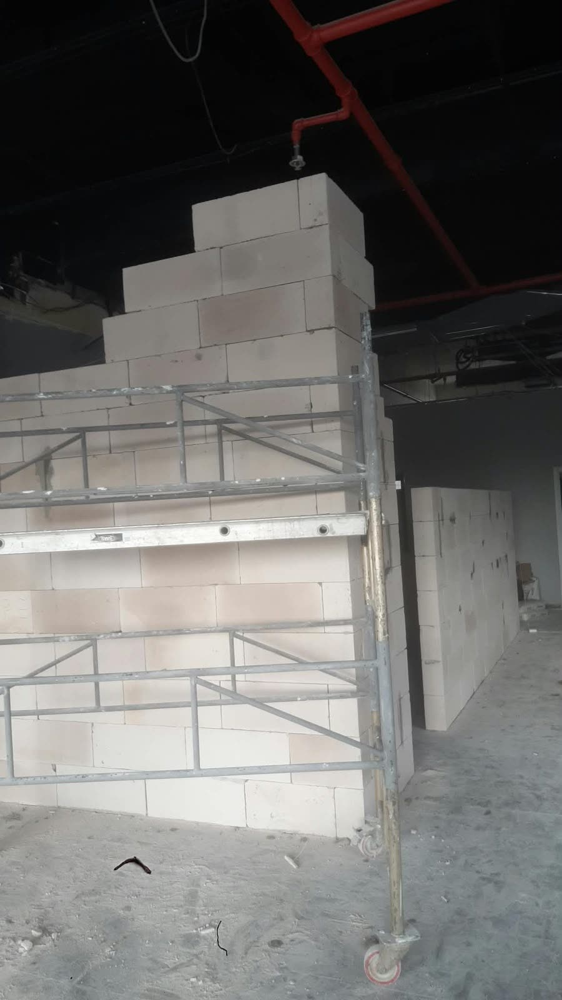
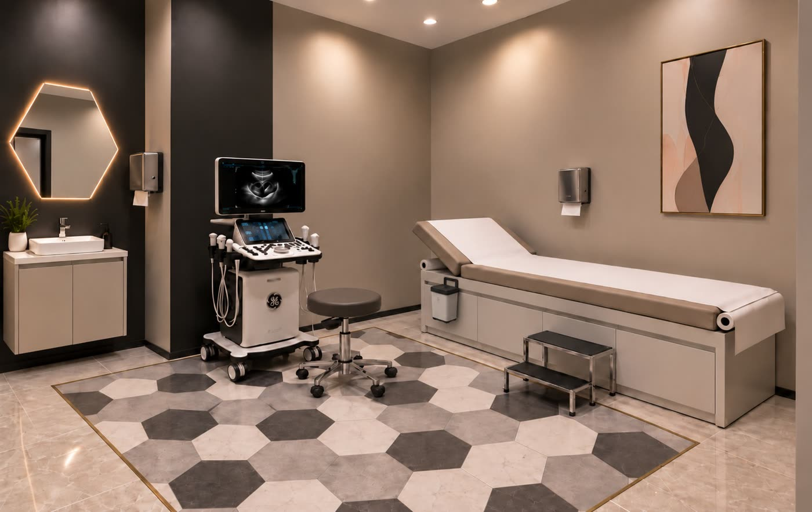
ŞANTİYETASARIM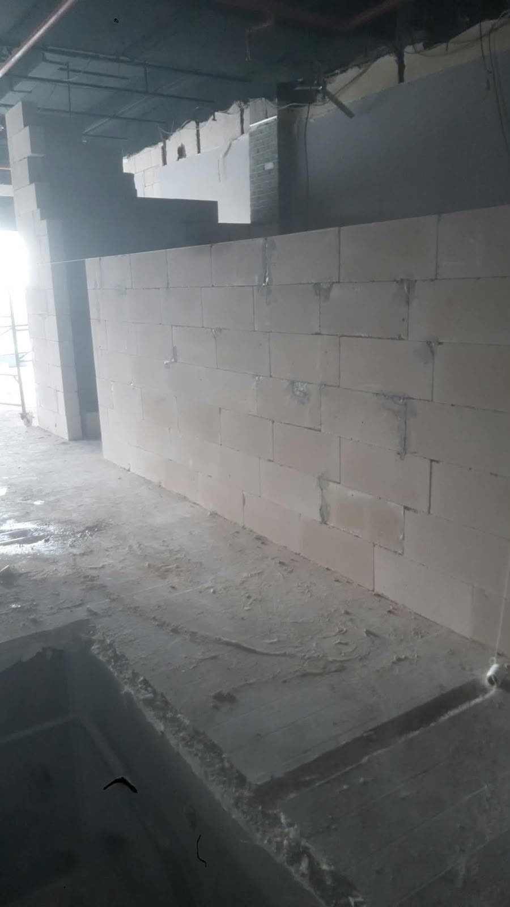
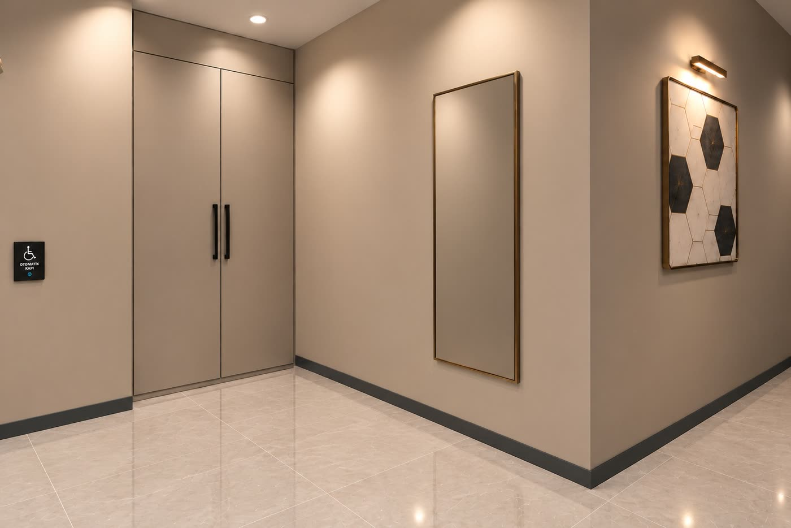
ŞANTİYETASARIM- TamamlandıKaba yapı ve çelik merdiven
- TamamlandıGazbeton bölmeler
- SürüyorAsma tavan ve kapılar
- SıradaZemin, boya, aydınlatma
- PlanlandıCephe giydirme, tabela
- AçılışCihazlar ve mobilya
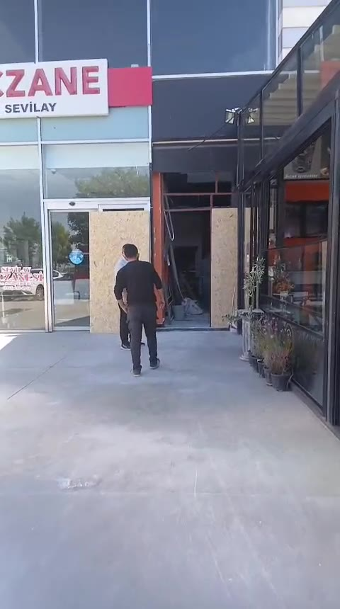
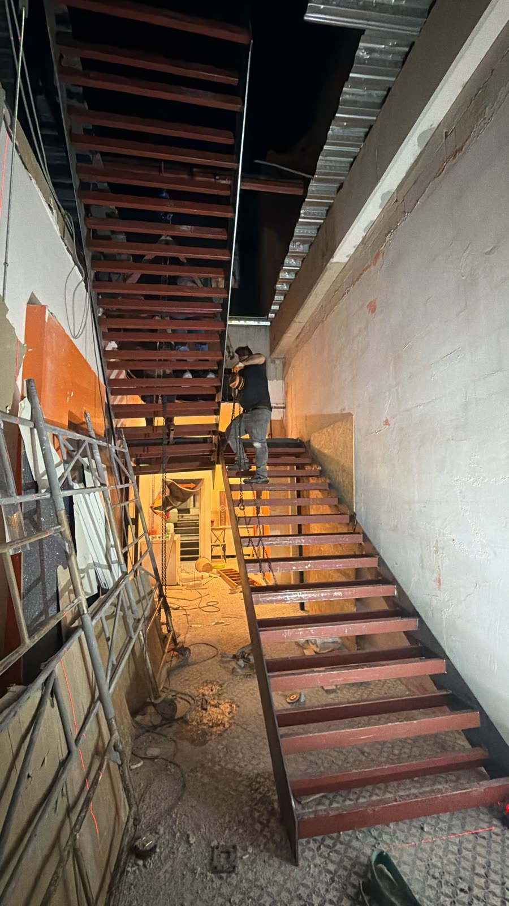
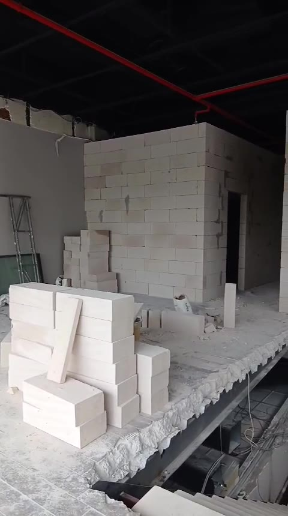
Üst katın camı ve giriş kapısı
Karşılama duvarındaki ışıklı altıgen düzen üst katın bütün camını kaplıyor. One-way vision folyo içeriden dışarıyı göstermeye devam ederken dışarıdan MD kimliğini okutuyor. Eczanenin yanındaki giriş kapısında aynı tonlarda bir ultrason görüntüsü var.
Üst kat · ön cephe camının tamamı · taslak, ölçüler sahada kesinleşir
MD giriş kapısı. Eczanenin yanındaki açılır-kapanır çift kanat kapı; iki kanada bölünen one-way vision folyoda cephe ile aynı siyah-altın tonlarda bir ultrason taraması. Kapı açıldığında görüntü ortadan ikiye ayrılır.
- Yüzey
- 1. kat ön cephe camının tamamı (≈ 6,6 × 3,1 m) ve MD giriş kapısı
- Malzeme
- One-way vision (delikli) folyo, dış yüzeye uygulama
- Tema
- Altıgen petek, ışıklı halkalar, ortada MD altıgeni
- Renk
- Antrasit zemin, pirinç-altın hatlar, taş rengi yazı
- Kapı
- Açılır-kapanır çift kanat, ultrason görüntülü folyo, pirinç kollar
- Metin
- MD altıgen logo · Radyoloji · Girişimsel Radyoloji · 1. kat
Görüntüleme ve görüntü eşliğinde girişim
Tanı aynı odada konuyor, gereken işlem aynı gün planlanabiliyor.
Tanısal radyoloji
- Genel ultrasonografiBatın · Pelvik
- Renkli DopplerArter · Ven
- Tiroid ve boyun ultrasonuNodül takibi
- Meme ultrasonuTarama · Takip
- Obstetrik 3D/4D ultrasonUltrason odası
- ElastografiKaraciğer · Tiroid
Girişimsel radyoloji
- Ultrason eşliğinde biyopsiTru-cut
- Tiroid ince iğne aspirasyonuİİAB
- Meme biyopsisiUS eşliğinde
- Kist ve apse drenajıPerkütan
- Tiroid nodülü ablasyonuRF
- Eklem ve yumuşak doku enjeksiyonlarıUS eşliğinde
Siyah, taş ve pirinç
Tüm odalarda aynı altıgen zemin dili; sıcak spot ışık, buzlu cam sürgü kapılar.
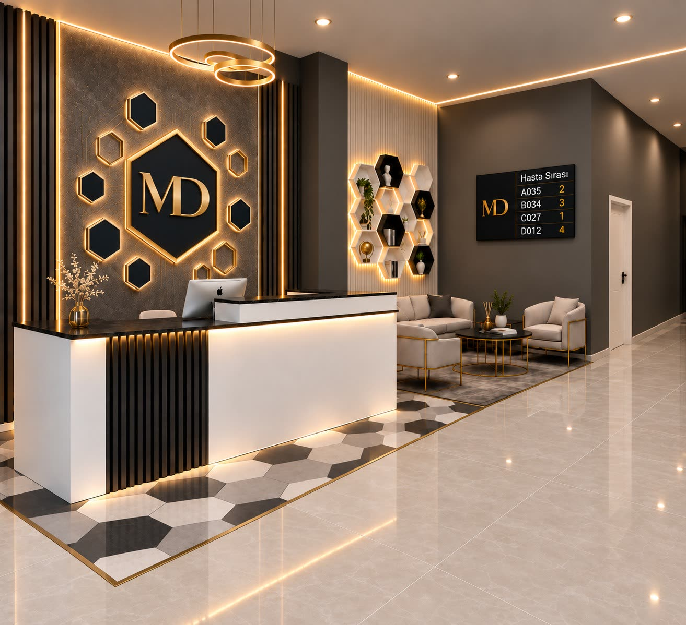
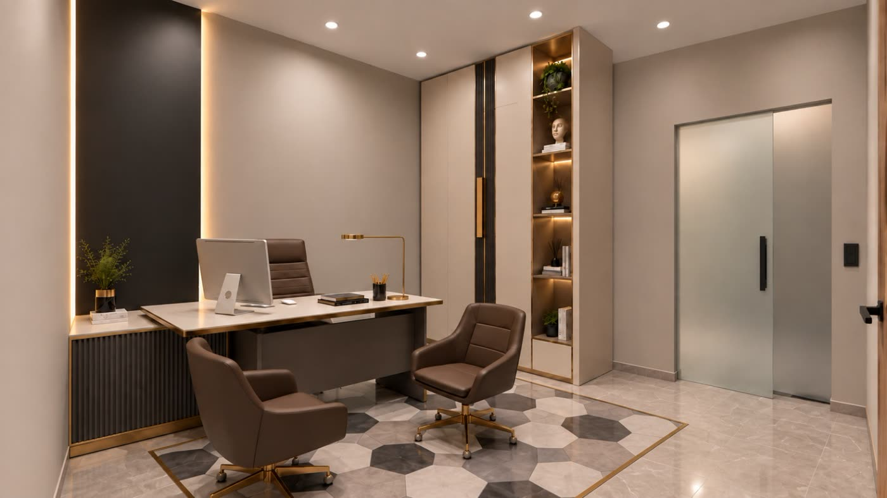
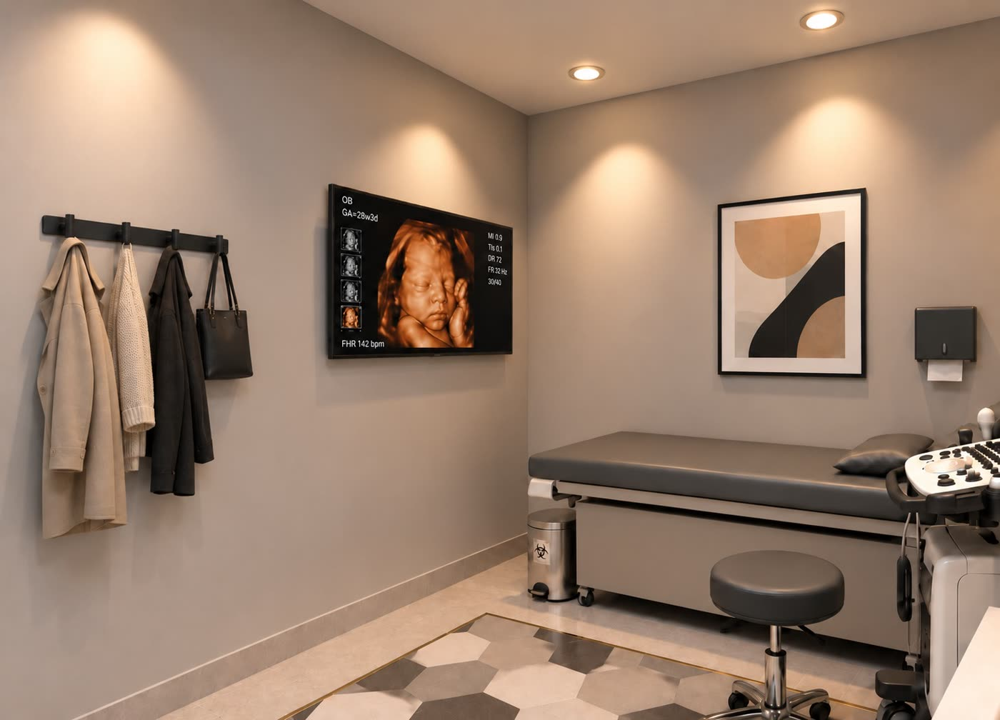
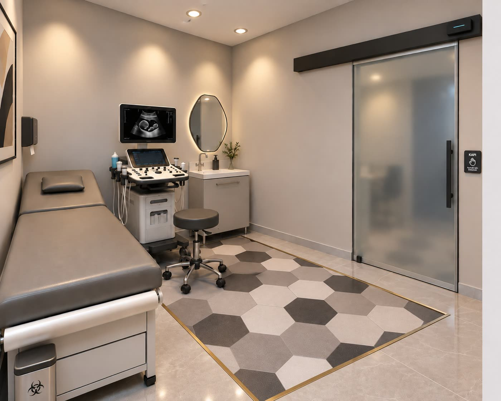
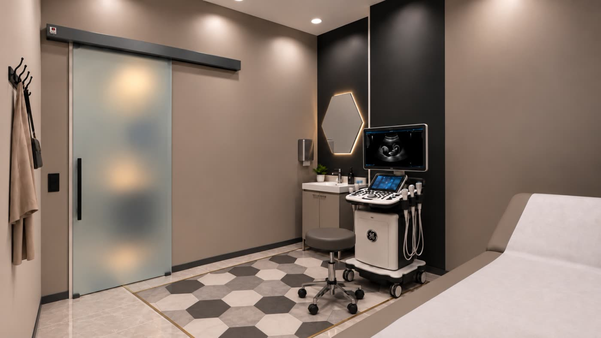
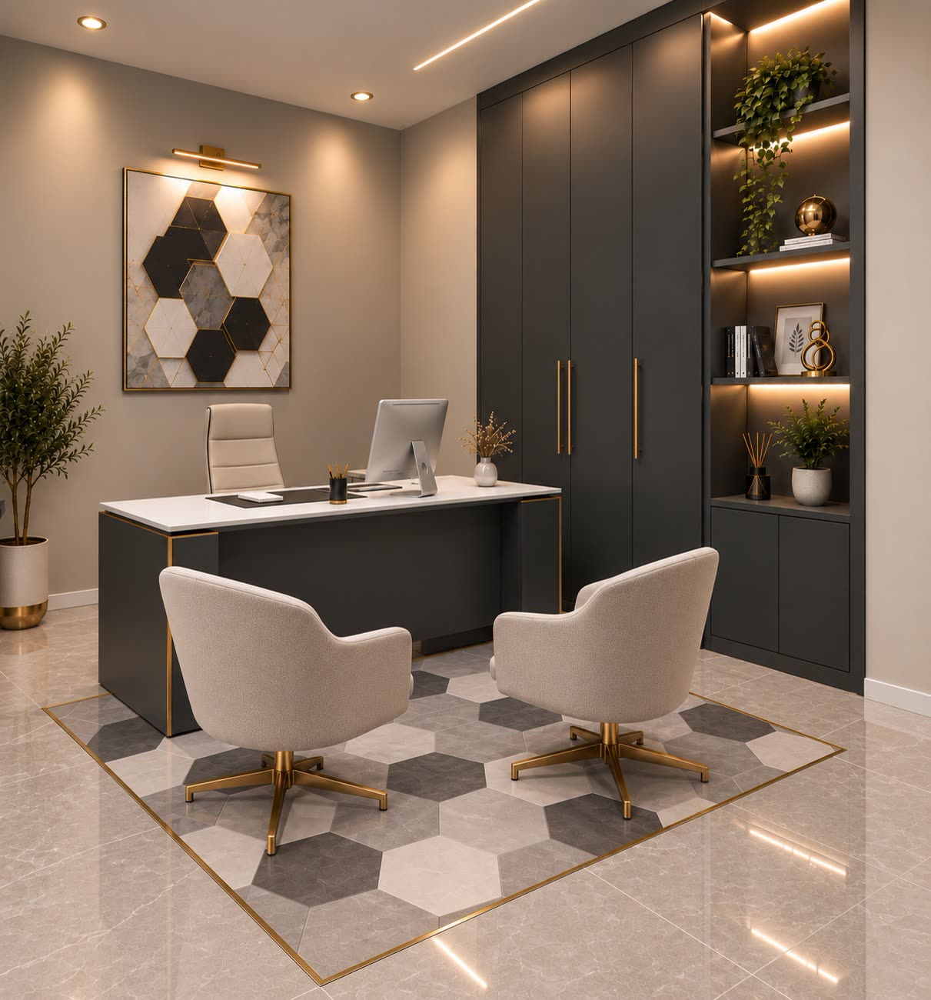
Memorial Ankara Hastanesi'nin yanında
Balgat'ta; karşı şeritte Koru Ankara Hastanesi, birkaç dakika ötede Çukurambar ve Söğütözü.
Nasıl gelinir
- Memorial Ankara Hastanesi'nin yanındaki binaya gelin.
- Zemin kattaki eczanenin hemen yanındaki MD Clinic kapısından girin.
- Merdivenle 1. kata çıkın; resepsiyon karşınızda.
Mesafeler klinik konumundan düz çizgi olarak hesaplanır. Klinik işareti yaklaşıktır.